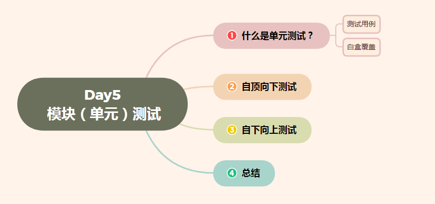
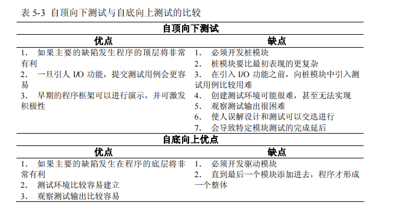

Day5 模块（单元）测试——
Day5 模块（单元）测试——单元测试、自顶向上测试、自下向上测试
[TOC]

什么是单元测试？
模块测试是对系统赋有明显功能的最小粒度 …
Day5 模块（单元）测试——单元测试、自顶向上测试、自下向上测试
[TOC]
什么是单元测试？
模块测试是对系统赋有明显功能的最小粒度的测试，是对一个模块进行测试，根据模块的功能说明，检验模块是否有错误。这种测试在各模块编程后进行。模块测试一般由编程人员自己进行。
模块测试很多人员认为是单元测试，其实还是有区别的，单元测试主要为，代码块，单元接口，类，方法，函数等，而模块测试更强调的是一个或者一块功能是完整的，可以独立的功能区域进行测试，这可能有几个单元代码组成。
模块测试的目的是保证每个模块作为一个单元能正确运行，所以模块测试通常又被称为单元测试。在这个测试步骤中所发现的往往是编码和详细设计的错误。
单元测试（模块测试）是开发者编写的一小段代码，用于检验被测代码的一个很小的、很明确的功能是否正确。通常而言，一个单元测试是用于判断某个特定条件（或者场景）下某个特定函数的行为。例如，你可能把一个很大的值放入一个有序list 中去，然后确认该值出现在list 的尾部。或者，你可能会从字符串中删除匹配某种模式的字符，然后确认字符串确实不再包含这些字符了。
单元测试（模块测试）是由程序员自己来完成，最终受益的也是程序员自己。可以这么说，程序员有责任编写功能代码，同时也就有责任为自己的代码编写单元测试。执行单元测试，就是为了证明这段代码的行为和我们期望的一致。
举例：工厂在组装一台电视机之前，会对每个元件都进行测试，这就是单元测试。
其实我们每天都在做单元测试。你写了一个函数，除了极简单的外，总是要执行一下，看看功能是否正常，有时还要想办法输出些数据，如弹出信息窗口什么的，这，也是单元测试，把这种单元测试称为临时单元测试。只进行了临时单元测试的软件，针对代码的测试很不完整，代码覆盖率要超过70%都很困难，未覆盖的代码可能遗留大量的细小的错误，这些错误还会互相影响，当BUG暴露出来的时候难于调试，大幅度提高后期测试和维护成本，也降低了开发商的竞争力。可以说，进行充分的单元测试，降低开发成本的必由之路。
对于程序员来说，如果养成了对自己写的代码进行单元测试的习惯，不但可以写出高质量的代码，而且还能提高编程水平。
单元测试
要进行充分的单元测试，应专门编写测试代码，并与产品代码隔离。比较简单的办法是为产品工程建立对应的测试工程，为每个类建立对应的测试类，为每个函数（很简单的除外）建立测试函数。
结构化程序时代
一般认为，在结构化程序时代，单元测试所说的单元是指函数，在当今的面向对象时代，单元测试所说的单元是指类。以类作为测试单位，复杂度高，可操作性较差，因此仍然主张以函数作为单元测试的测试单位，但可以用一个测试类来组织某个类的所有测试函数。单元测试不应过分强调面向对象，因为局部代码依然是结构化的。单元测试的工作量较大，简单实用高效才是硬道理。
有一种看法是，只测试类的接口(公有函数)，不测试其他函数，从面向对象角度来看，确实有其道理，但是，测试的目的是找错并最终排错，因此，只要是包含错误的可能性较大的函数都要测试，跟函数是否私有没有关系。
单元测试与使用
我们编写代码时，一定会反复调试保证它能够编译通过。如果是编译没有通过的代码，没有任何人会愿意交付给自己的老板。但代码通过编译，只是说明了它的语法正确；我们却无法保证它的语义也一定正确，没有任何人可以轻易承诺这段代码的行为一定是正确的。
幸运的是，单元测试会为我们的承诺做保证。编写单元测试就是用来验证这段代码的行为是否与我们期望的一致。有了单元测试，我们可以自信的交付自己的代码，而没有任何的后顾之忧。
- 什么时候测试？
单元测试越早越好，早到什么程度？XP开发理论讲究TDD，即测试驱动开发，先编写测试代码，再进行开发。在实际的工作中，可以不必过分强调先什么后什么，重要的是高效和感觉舒适。先编写产品函数的框架，然后编写测试函数，针对产品函数的功能编写测试用例，然后编写产品函数的代码，每写一个功能点都运行测试，随时补充测试用例。所谓先编写产品函数的框架，是指先编写函数空的实现，有返回值的随便返回一个值，编译通过后再编写测试代码，这时，函数名、参数表、返回类型都应该确定下来了，所编写的测试代码以后需修改的可能性比较小。
- 由谁测试？
单元测试与其他测试不同，单元测试可看作是：编码过了单元测试的代码才是已完成的代码，提交产品代码时也要同时提交测试代码。测试部门可以作一定程度的审核。
关于桩代码，单元测试应避免编写桩代码。桩代码就是用来代替某些代码的代码，例如，产品函数或测试函数调用了一个未编写的函数，可以编写桩函数来代替该被调用的函数，桩代码也用于实现测试隔离。采用由底向上的方式进行开发，底层的代码先开发并先测试，可以避免编写桩代码，这样做的好处有：减少了工作量；测试上层函数时，也是对下层函数的间接测试；当下层函数修改时，通过回归测试可以确认修改是否导致上层函数产生错误。
单元测试不仅仅是作为无错编码一种辅助手段在一次性的开发过程中使用，单元测试必须是可重复的，无论是在软件修改，或是移植到新的运行环境的过程中。因此，所有的测试都必须在整个软件系统的生命周期中进行维护。
经常与单元测试联系起来的另外一些开发活动包括代码走读(Code review)，静态分析(Static analysis)和动态分析(Dynamic analysis)。静态分析就是对软件的源代码进行研读，查找错误或收集一些度量数据，并不需要对代码进行编译和执行。动态分析就是通过观察软件运行时的动作，来提供执行跟踪，时间分析，以及测试覆盖度方面的信息。
单元测试的误解
一旦编码完成，开发人员总是会迫切希望进行软件的集成工作，这样他们就能够看到实际的系统开始启动工作了。 这在外表上看来是一项明显的进步，而象单元测试这样的活动也许会被看作是通往这个阶段点的道路上的障碍， 推迟了对整个系统进行联调这种真正有意思的工作启动的时间。
在这种开发步骤中，真实意义上的进步被外表上的进步取代了。系统能够正常工作的可能性是很小的，更多的情况是充满了各式各样的Bug。在实践中，这样一种开发步骤常常会导致这样的结果：软件甚至无法运行。更进一步的结果是大量的时间将被花费在跟踪那些包含在独立单元里的简单的Bug上面，在个别情况下，这些Bug也许是琐碎和微不足道的，但是总的来说，他们会导致在软件集成为一个系统时增加额外的工期， 而且当这个系统投入使用时也无法确保它能够可靠运行。
在实践工作中，进行了完整计划的单元测试和编写实际的代码所花费的精力大致上是相同的。一旦完成了这些单元测试工作，很多Bug将被纠正，在确信他们手头拥有稳定可靠的部件的情况下，开发人员能够进行更高效的系统集成工作。这才是真实意义上的进步，所以说完整计划下的单元测试是对时间的更高效的利用。而调试人员的不受控和散漫的工作方式只会花费更多的时间而取得很少的好处。
它仅仅是证明这些代码做了什么
这是那些没有首先为每个单元编写一个详细的规格说明而直接跳到编码阶段的开发人员提出的一条普遍的抱怨， 当编码完成以后并且面临代码测试任务的时候，他们就阅读这些代码并找出它实际上做了什么，把他们的测试工作基于已经写好的代码的基础上。当然，他们无法证明任何事情。所有的这些测试工作能够表明的事情就是编译器工作正常。是的，他们也许能够抓住(希望能够)罕见的编译器Bug，但是他们能够做的仅仅是这些。
如果他们首先写好一个详细的规格说明，测试能够以规格说明为基础。代码就能够针对它的规格说明，而不是针对自身进行测试。这样的测试仍然能够抓住编译器的Bug，同时也能找到更多的编码错误，甚至是一些规格说明中的错误。好的规格说明可以使测试的质量更高，所以最后的结论是高质量的测试需要高质量的规格说明。
在实践中会出现这样的情况： 一个开发人员要面对测试一个单元时只给出单元的代码而没有规格说明这样吃力不讨好的任务。你怎样做才会有更多的收获，而不仅仅是发现编译器的Bug？第一步是理解这个单元原本要做什么， --- 不是它实际上做了什么。 比较有效的方法是倒推出一个概要的规格说明。这个过程的主要输入条件是要阅读那些程序代码和注释， 主要针对这个单元， 及调用它和被它调用的相关代码。画出流程图是非常有帮助的，你可以用手工或使用某种工具。 可以组织对这个概要规格说明的走读(Review)，以确保对这个单元的说明没有基本的错误， 有了这种最小程度的代码深层说明，就可以用它来设计单元测试了。
我是个很棒的程序员， 我是不是可以不进行单元测试？
在每个开发组织中都至少有一个这样的开发人员，他非常擅长于编程，他们开发的软件总是在第一时间就可以正常运行，因此不需要进行测试。你是否经常听到这样的借口？
在真实世界里，每个人都会犯错误。即使某个开发人员可以抱着这种态度在很少的一些简单的程序中应付过去。 但真正的软件系统是非常复杂的。真正的软件系统不可以寄希望于没有进行广泛的测试和Bug修改过程就可以正常工作。
编码不是一个可以一次性通过的过程。在真实世界中，软件产品必须进行维护以对操作需求的改变作出反应， 并且要对最初的开发工作遗留下来的Bug进行修改。你希望依靠那些原始作者进行修改吗？ 这些制造出这些未经测试的原始代码的资深专家们还会继续在其他地方制造这样的代码。在开发人员做出修改后进行可重复的单元测试可以避免产生那些令人不快的负作用。
不管怎样，集成测试]将会抓住所有的Bug 我们已经在前面的讨论中从一个侧面对这个问题进行了部分的阐述。这个论点不成立的原因在于规模越大的代码集成意味着复杂性就越高。如果软件的单元没有事先进行测试，开发人员很可能会花费大量的时间仅仅是为了使软件能够运行，而任何实际的测试方案都无法执行。
单元测试过程
一旦软件可以运行了，开发人员又要面对每个单元进行全面的测试。 这是一件非常困难的事情，甚至在创造一种单元调用的测试条件的时候，要全面的考虑单元的被调用时的各种入口参数。在软件集成阶段，对单元功能全面测试的复杂程度远远的超过独立进行的单元测试过程。
最后的结果是测试将无法达到它所应该有的全面性。一些缺陷将被遗漏，并且很多Bug将被忽略过去。
让我们类比一下，假设我们要清洗一台已经完全装配好的食物加工机器!无论你喷了多少水和清洁剂，一些食物的小碎片还是会粘在机器的死角位置，只有任其腐烂并等待以后再想办法。但我们换个角度想想，如果这台机器是拆开的， 这些死角也许就不存在或者更容易接触到了，并且每一部分都可以毫不费力的进行清洗。
成本效率不高
一个特定的开发组织或软件应用系统的测试水平取决于对那些未发现的Bug的潜在后果的重视程度。这种后果的严重程度可以从一个Bug引起的小小的不便到发生多次的死机的情况。这种后果可能常常会被软件的开发人员所忽视(但是用户可不会这样)，这种情况会长期的损害这些向用户提交带有Bug的软件的开发组织的信誉，并且会导致对未来的市场产生负面的影响。相反地，一个可靠的软件系统的良好的声誉将有助于一个开发组织获取未来的市场。
Bug发现的越晚，修改它所需的费用就越高，因此从经济角度来看， 应该尽可能早的查找和修改Bug。在修改费用变的过高之前，单元测试是一个在早期抓住Bug的机会。
相比后阶段的测试，单元测试的创建更简单，维护更容易，并且可以更方便的进行重复。从全程的费用来考虑， 相比起那些复杂且旷日持久的集成测试]，或是不稳定的软件系统来说，单元测试所需的费用是很低的。
结论
经验表明一个尽责的单元测试方法将会在软件开发的某个阶段发现很多的Bug，并且修改它们的成本也很低。在软件开发的后期阶段，Bug的发现并修改将会变得更加困难，并要消耗大量的时间和开发费用。在提供了经过测试的单元的情况下，系统集成过程将会大大地简化。开发人员可以将精力集中在单元之间的交互作用和全局的功能实现上，而不是陷入充满很多Bug的单元之中不能自拔。有效的单元测试是推行全局质量的一部分。
单元测试的优点
- 验证行为
程序中的每一项功能都是测试来验证它的正确性。它为以后的开发提供支缓。就算是开发后期，我们也可以轻松的增加功能或更改程序结构，而不用担心这个过程中会破坏重要的东西。而且它为代码的重构提供了保障。这样，我们就可以更自由的对程序进行改进。
- 设计行为
编写单元测试将使我们从调用者观察、思考。特别是先写测试（test-first），迫使我们把程序设计成易于调用和可测试的，即迫使我们解除软件中的耦合。
- 编写文档行为
单元测试是一种无价的文档，它是展示函数或类如何使用的最佳文档。这份文档是可编译、可运行的，并且它保持最新，永远与代码同步。
- 具有回归性
自动化的单元测试避免了代码出现回归，编写完成之后，可以随时随地的快速运行测试。
- 单元测试的范畴
如果要给单元测试定义一个明确的范畴，指出哪些功能是属于单元测试，这似乎很难。但下面讨论的四个问题，基本上可以说明单元测试的范畴，单元测试所要做的工作。1、 它的行为和我期望的一致吗？
这是单元测试最根本的目的，我们就是用单元测试的代码来证明它所做的就是我们所期望的。
- 它的行为一直和我期望的一致吗？
编写单元测试，如果只测试代码的一条正确路径，让它正确走一遍，并不算是真正的完成。软件开发是一个项复杂的工程，在测试某段代码的行为是否和你的期望一致时，你需要确认：在任何情况下，这段代码是否都和你的期望一致；譬如参数很可疑、硬盘没有剩余空间、缓冲区溢出、网络掉线的时候。
- 我可以依赖单元测试吗？
不能依赖的代码是没有多大用处的。既然单元测试是用来保证代码的正确性，那么单元测试也一定要值得依赖。
- 单元测试说明我的意图了吗？
单元测试能够帮我们充分了解代码的用法，从效果上而言，单元测试就像是能执行的文档，说明了在你用各种条件调用代码时，你所能期望这段代码完成的功能。
测试用例
下面说说测试用例、输入数据及预期输出。输入数据是测试用例的核心，对输入数据的定义是：被测试函数所读取的外部数据及这些数据的初始值。外部数据是对于被测试函数来说的，实际上就是除了局部变量以外的其他数据，把这些数据分为几类：参数、成员变量、全局变量、IO媒体。IO媒体是指文件、数据库或其他储存或传输数据的媒体，例如，被测试函数要从文件或数据库读取数据，那么，文件或数据库中的原始数据也属于输入数据。一个函数无论多复杂，都无非是对这几类数据的读取、计算和写入。预期输出是指：返回值及被测试函数所写入的外部数据的结果值。返回值就不用说了，被测试函数进行了写操作的参数(输出参数)、成员变量、全局变量、IO媒体，它们的预期的结果值都是预期输出。一个测试用例，就是设定输入数据，运行被测试函数，然后判断实际输出是否符合预期。下面举一个与成员变量有关的例子：
白盒覆盖
上面所说的测试数据都是针对程序的功能来设计的，就是所谓的黑盒测试。单元测试还需要从另一个角度来设计测试数据，即针对程序的逻辑结构来设计测试用例，就是所谓的白盒测试。如果黑盒测试是足够充分的，那么白盒测试就没有必要，可惜“足够充分”只是一种理想状态，例如：真的是所有功能点都测试了吗？程序的功能点是人为的定义，常常是不全面的；各个输入数据之间，有些组合可能会产生问题，怎样保证这些组合都经过了测试？难于衡量测试的完整性是黑盒测试的主要缺陷，而白盒测试恰恰具有易于衡量测试完整性的优点，两者之间具有极好的互补性，例如：完成功能测试后统计语句覆盖率，如果语句覆盖未完成，很可能是未覆盖的语句所对应的功能点未测试。
设计测试用例
白盒测试针对程序的逻辑结构设计测试用例，用逻辑覆盖率来衡量测试的完整性。逻辑单位主要有：语句、分支、条件、条件值、条件值组合，路径。语句覆盖就是覆盖所有的语句，其他类推。另外还有一种判定条件覆盖，其实是分支覆盖与条件覆盖的组合，在此不作讨论。
跟条件有关的覆盖就有三种，解释一下：条件覆盖是指覆盖所有的条件表达式，即所有的条件表达式都至少计算一次，不考虑计算结果；条件值覆盖是指覆盖条件的所有可能取值，即每个条件的取真值和取假值都要至少计算一次；条件值组合覆盖是指覆盖所有条件取值的所有可能组合。
做过一些粗浅的研究，发现与条件直接有关的错误主要是逻辑操作符错误，例如：||写成&&，漏了写!什么的，采用分支覆盖与条件覆盖的组合，基本上可以发现这些错误，另一方面，条件值覆盖与条件值组合覆盖往往需要大量的测试用例，因此，条件值覆盖和条件值组合覆盖的效费比偏低。效费比较高且完整性也足够的测试要求是这样的：完成功能测试，完成语句覆盖、条件覆盖、分支覆盖、路径覆盖。
做过单元测试的朋友恐怕会对测试要求给予一个字的评价：晕！因为这似乎是不可能的要求，要达到这种测试完整性?所以提出这种测试要求，是因为利用一些工具，可以在较低的成本下达到这种测试要求，后面将会作进一步介绍。
关于白盒测试用例的设计，程序测试领域的书籍一般都有讲述，普通方法是画出程序的逻辑结构图如程序流程图或控制流图，根据逻辑结构图设计测试用例，这些是纯粹的白盒测试，所推荐的方法是：先完成黑盒测试，然后统计白盒覆盖率，针对未覆盖的逻辑单位设计测试用例覆盖它，例如，先检查是否有语句未覆盖，有的话设计测试用例覆盖它，然后用同样方法完成条件覆盖、分支覆盖和路径覆盖，这样的话，既检验了黑盒测试的完整性，又避免了重复的工作，用较少的时间成本达到非常高的测试完整性。不过，这些工作可不是手工能完成的，必须借助于工具，后面会介绍可以完成这些工作的测试工具。
自顶向下测试策略
方法：先对最顶层的单元进行测试，把顶层所调用的单元做成桩模块。其次对第二层进行测试，使用上面已测试的单元做驱动模块。如此类推直到测试完所有模块。
· 优点：可以节省驱动函数的开发工作量，测试效率较高。
· 缺点：随着被测单元一个一个被加入，测试过程将变得越来越复杂，并且开发和维护的成本将增加。
自底向上测试策略
目的：从依赖性最小的底层模块开始，按照层次结构图，逐层向上集成，验证系统的稳定性。
定义：自底向上集成是从系统层次结构图的最底层模块开始进行组装和集成测试的方式。对于某一个层次的特定模块，因为它的子模块（包括子模块的所有下属模块）已经组装并测试完成，所以不再需要桩模块。
在测试过程中，如果想要从子模块得到信息可以通过直接运行子模块得到。也就是说，在集成测试的过程中只需要开发相应的驱动模块就可以了。

总结
一个尽责的单元测试方法将会在软件开发的某个阶段发现很多的Bug，并且修改它们的成本也很低。在软件开发的后期阶段，Bug的发现并修改将会变得更加困难，并要消耗大量的时间和开发费用。在提供了经过测试的单元的情况下，系统集成过程将会大大地简化。开发人员可以将精力集中在单元之间的交互作用和全局的功能实现上，而不是陷入充满很多Bug的单元之中不能自拔。有效的单元测试是推行全局质量的一部分。
单元测试主要是白盒测试
白盒测试测试用例设计方法：
语句覆盖、判断覆盖、条件覆盖、判断-条件覆盖、条件组合覆盖、路径补充覆盖